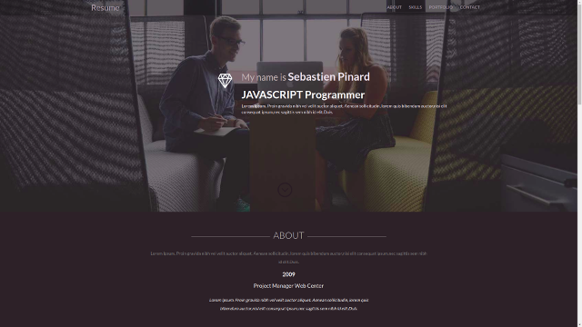

Exercice 1
Objectifs
- Comprendre la structure html sous forme de boite
- Connaître les principales balises html
- Savoir insérer une feuille de style
- Comprendre les sélecteurs css pour appliquer les styles
Ennoncé
Sur la base du cv d’exemple fourni, construire la structure html de la bannière.

Tips
Commencer par faire un découpage en boites à partir de l’exemple.
Utiliser les balises ‹nav› et ‹a› pour la barre de navigation
Utiliser les balises ‹img› sans mettre de source
Aide